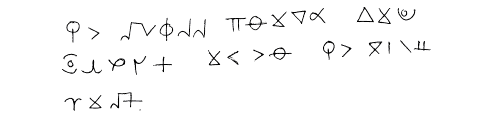
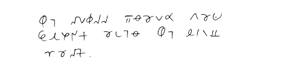
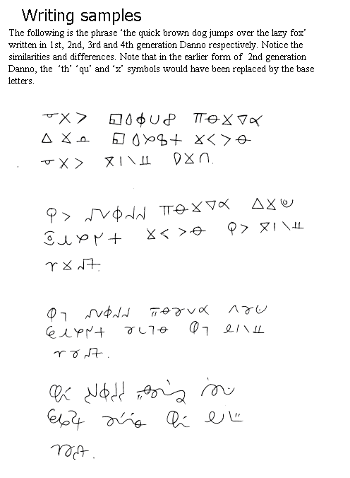

Ani
History
The Ani script developed from "Danno". Danno started life at a place called Penrith High School. A twelve year old named Danny apparently invented it in history class, and his friend Michael named the script after him. Perhaps the name Ani came from "Danny" as well.
We have found some old documents that show the development of the script. Below you can see the sentence "The quick brown dog jumps over the lazy fox" in various versions of Danno.
In the earliest versions of Danno the letters in the second half of the alphabet were just inversions of those in the first half (a-z, b-y, m-n etc), a bit like a butterfly print. The visual connections between many of these pairs of letters is still evident in Ani.


